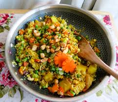
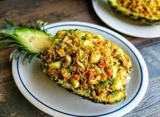

A delicious and savory Thai-inspired fried rice dish packed with sweet pineapple, veggies, and aromatic flavors.
Ingredients
- 2 cups cooked rice (preferably jasmine rice)
- 1 cup pineapple chunks
- 1/2 cup diced bell peppers (any color)
- 1/2 cup diced carrots
- 1/2 cup frozen peas
- 2 cloves garlic, minced
- 3 tablespoons soy sauce
- 2 tablespoons vegetable oil
- 2 eggs, beaten
- Salt and pepper to taste
- Optional: 1/4 cup chopped green onions for garnish

Steps to Cook
- Heat vegetable oil in a large skillet or wok over medium-high heat.
- Add minced garlic and sauté until fragrant, about 1 minute.
- Push garlic to one side of the skillet and pour beaten eggs into the other side.
- Scramble eggs until cooked through, then mix with garlic.
- Add diced bell peppers, carrots, and peas to the skillet. Cook until veggies are tender, about 3-4 minutes.
- Add cooked rice and pineapple chunks to the skillet. Stir well to combine.
- Pour soy sauce over the rice mixture and stir until evenly coated.
- Season with salt and pepper to taste.
- Continue cooking for another 2-3 minutes, stirring frequently.
- Remove from heat and garnish with chopped green onions if desired.
- Serve hot and enjoy!
